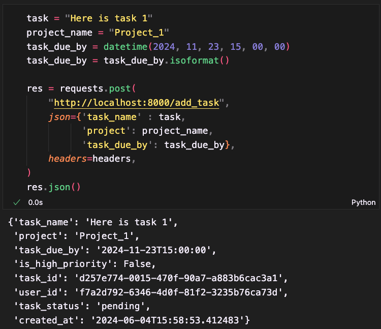

Task Management API (BACKEND)
Overview
This project is a task management backend API built using FastAPI and SQLAlchemy. It supports user registration, JWT-based authentication, and task operations such as adding, viewing, modifying, and deleting tasks. Users can prioritize tasks, enhancing productivity by organizing tasks based on urgency. Each task includes attributes like title, description, status (e.g., pending, completed), and a due date, which aids in detailed task tracking and management. The API is designed with best practices in code organization, error handling, and security. It uses Docker for containerization, postgres db for data storage and Alembic for database management, ensuring the application is scalable and maintainable. The APIs are well-documented, facilitating easy integration and user interaction.
Here is the a link to the code
Register User
The registration endpoint first checks if a username already exists in the database and if so, raises an HTTP exception to prevent duplicate registrations. If the username is available, it hashes the password and creates a new user with a unique UUID and the hashed password. This new user is then added to the database. The function returns the newly created user, ensuring that usernames are unique and passwords are securely stored.
Json Web Token
The token endpoint is responsible for user authentication. It accepts username and password credentials via an OAuth2PasswordRequestForm. The function first retrieves the user from the database using the provided username. It then verifies the provided password against the stored hashed password. If the verification fails, it raises an HTTP exception indicating incorrect credentials. If successful, it constructs a JWT (JSON Web Token) payload with the user's ID, username, and the token's issuance time. A token is then created with an expiration time and returned to the user. This token can be used for authenticating subsequent requests by the user.
Add Task
The add task endpoint is responsible for adding a new task to the system. It first extracts the authorization token from the request headers and verifies it to retrieve the user's ID. A new task instance is then created with a unique UUID, a default status of "pending", and the user's ID, along with other task details passed in the request. This task instance is added to the database. Finally, the newly created task object is returned to the client. This setup ensures secure and authenticated task creation within the system.
User's Tasks
The user tasks endpoint first extracts the authorization token from the request headers and verifies it to obtain the user's ID. Using this ID, it fetches the user's tasks from the database. Each task is then transformed into a structured output format defined by the TaskOut schema, which includes details such as task ID, user ID, status, name, associated project, due date, creation date, and priority status. The tasks are finally sorted to prioritize high-priority tasks before being returned to the client. This setup ensures that the user receives a well-organized list of their tasks, with critical tasks highlighted at the top of the list.
Update Task As High Priority
The update task endpoint first retrieves the authorization token from the request headers and verifies it to ensure the user is authorized. The function then fetches the task from the database; if the task does not exist or if the task's user ID does not match the token's user ID, it raises an HTTP exception. If the checks pass, the task is updated in the database using the provided task_update data. Finally, the updated task details are returned in a structured format defined by TaskOut schema, which includes task ID, user ID, status, name, associated project, due date, creation date, and priority status. This setup ensures that only authorized and valid updates are made to tasks.

Delete Task
The delete task endpoint first retrieves the authorization token from the request headers and verifies it to obtain the user's ID. The task is then fetched from the database; if the task does not exist or if the task's user ID does not match the token's user ID, an HTTP exception is raised. If the checks pass, the task is deleted from the database. The function returns a success message along with the details of the deleted task, ensuring that only authorized and valid deletions are made within the system.
Key Skills
Python, RESTful API design, postgres db, alembic, docker, pydantic, sql alchemy, asynchronous programming, JWT Authentication, FastAPI, OAuth2, API security, schema design, API documentation, containerization, database management, user authentication, task management, CRUD operations